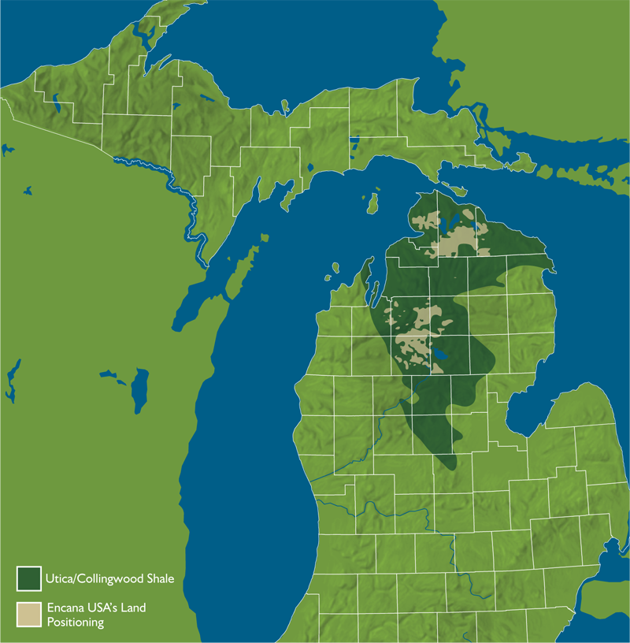
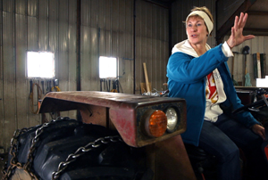

It's currently unlikely
that we will see a lot of new oil and gas development in Michigan in the near future…Johannes Schwank, U-M chemical engineering professor
Karen Fifelski didn't intend to become an activist at 60 years old. But the call to action came shortly after a man in a pickup rolled up her driveway and asked if she wanted to lease away her mineral rights – his company might be interested in drilling for oil and gas under her dairy farm.
Fifelski had recently seen Gasland, a film about potential risks of the latest gas and oil extraction techniques of hydraulic fracturing and horizontal drilling.
"I said, ‘No, thank you. You can leave,'" Fifelski recalled. "I must have had quite a strong look about me, because he never came back."
Today, she spends several nights a week at government meetings or gatherings of the fledgling group Michigan Land Air Water Defense (MLAWD), where she is a board member. MLAWD is suing the state over mineral rights leases of public land in Barry and Allegan counties.
"It feels like something I need to be doing," Fifelski said.
As the number of horizontally drilled and hydraulically fractured, or fracked, wells increases across the nation, so do the ranks of opponents like Fifelski. Michigan is one of 28 states that sit atop potentially lucrative deep shale formations. As a result, over the past few years in the state, fracking has made its way to town meetings, to research labs and to a slowly increasing number of well pads.
Fracturing has been
done in Michigan for more than 60 years and 12,000 wells without the kind of environmental damage alleged in other states.Brad Wurfel, communications director for the Michigan Department of Environmental Quality
In a recent University of Michigan poll, just over half of respondents said they believe the benefits of shale gas development outweigh any negative aspects. So while opponents appear to be the in the minority, they are many. Fifelski's group MLAWD has grown to more than 200 members. And for the second year, the grassroots group Ban Michigan Fracking is gathering signatures for a November ballot initiative to eliminate all horizontal fracking.
At the same time, a team of 10 U-M researchers is working with stakeholders to study fracking issues as they pertain to the state. The U-M Graham Environmental Sustainability Institute's "integrated assessment" will examine the state's geology, environment, policies and public perspective, as well as fracking's economics and potential public health risks.
Industry growing slowly
Out in the field, though, horizontal fracking is still in its early stages in Michigan. It's been nearly three years since the state's May 2010 mineral lease auction that netted a record $178 million from companies eager for the rights under public land. Today the number of deep, horizontal, fracked wells actually producing gas in Michigan is three. For comparison's sake, in Pennsylvania, one company – Cabot Oil & Gas – has 200 wells in Susquehanna County alone.
As of mid-March, Encana, the Denver-based firm that operates all three in Michigan, had six additional wells in development, five more permitted and another six pending permits in the state. Most of the company's activity has been on state-owned land in Kalkaska County. It is moving into Roscommon, Cheboygan and Crawford.
"It's very truly exploration at this point," said Doug Hock, director of community and public relations at Encana. "We know there's a resource there, but the question is: Can we extract it in a way that's economical?"

Company officials estimate that if they succeed, they could potentially drill about 500 wells in Michigan over the next several years.
Encana is focusing on the Collingwood shale, also referred to as the Utica-Collingwood. A few years ago, several firms were prospecting in it, but today it's the only one left. The formation starts at around 8,500 feet down – a mile and a half below the surface. Its potentially productive parts are in the top half of Michigan's lower peninsula. Encana holds the mineral rights of 432,000 acres of it.
Time will tell if it pays off. Johannes Schwank, a professor of chemical engineering at U-M, predicts that Michigan won't see significant development until natural gas prices increase and stabilize to between $6 and $8 per thousand cubic feet. That's about double what they are today.
"It's currently unlikely that we will see a lot of new oil and gas development in Michigan in the near future, due to low gas prices and the high cost of recovering gas from Michigan's shale formations," said Schwank, who is working on a report about fracking technology for the U-M study.
Not your grandfather's fracking?
It's like comparing a pea shooter with a rifle.Steve Losher, co-founder and president of Michigan Land Air Water Defense
Michigan has a history of gas development that began in 1925. Industry and state officials say fracking has been happening here for just as long.
"Fracturing has been done in Michigan for more than 60 years and 12,000 wells without the kind of environmental damage alleged in other states," said Brad Wurfel, communications director for the Michigan Department of Environmental Quality. "We're hard-pressed to identify an industrial process in Michigan with that kind of track record."
To many fracking opponents, however, the new approach seems a lot different from the old one, in terms of the amount of water and pressure required.
Most of Michigan’s historic gas wells are vertical ones that reach down to a shallow, naturally fractured shale called the Antrim at 1,200 to 2,000 feet. It takes less than 100,000 gallons of water to frack one of them. In contrast, it typically takes five million to seven million gallons of water to frack a deep horizontal well. And Encana has used more than 20 million gallons to frack a well with a 10,500-foot horizontal leg. The well required that much, officials said, because it was so long, but it will drain an area that would take 160 to 200 vertical wells to empty.
In terms of pressure, an Antrim well might need between 2,000 and 3,000 pounds per square inch to effectively push the fluid down, said Jim Peters, operations manager for Northstar Energy. You can buy a consumer-grade pressure washer within that range. To frack a deep shale, you need up to 10,000 psi.
"It's like comparing a pea shooter with a rifle," said Steve Losher, co-founder and president of MLAWD, the group that's suing the state.
Neither type concerns Rick O'Brien, who lives in Gaylord. He's had two shallow, vertical gas wells on his property for about 13 years. O'Brien hears a lot of talk about the deep fracking happening in his part of the state.
"Just yesterday, I was having lunch at La Seniorita and I overheard two ladies at the table behind me talking about it -- how it could hurt our water," O'Brien said. He didn't turn around to argue with them, but he did comment to his colleague.
"They've been doing this all my life," O'Brien said, "and the water seems to be okay."
Getting ahead in Michigan

What I've been able to appreciate, I want our kids to see. I want our grandkids to see.Karen Fifelski, board member of Michigan Land Air Water Defense
Encana plans to continue exploring the Utica-Collingwood formation in Michigan with one drilling rig through 2013.
Preliminary reports from the U-M study could come out this summer.
"I think especially in Michigan, we're almost able to get ahead of the curve in some ways with this concerted effort," said Brian Ellis, an assistant professor of civil and environmental engineering who is involved in the U-M fracking study. "In many instances, environmental engineers have to come in and fix a problem after it's happened.
"As a scientist, I don't come in with a preconceived notion about whether fracking is or is not a problem," he added. "But there may be a risk associated with this practice and that is enough to move me to look into it."
For Fifelski, it's more personal. She and her family have lived on their hill with a 360-degree horizon for decades. Some of her neighbors have signed mineral leases and that scares her.
"I don't want to see a well rig right next door to us. I don't want this land to be ruined. I want our water to stay good," Fifelski said. "What I've been able to appreciate, I want our kids to see. I want our grandkids to see. …I won't quit."
{kind=link}
{kind=link}
{kind=link}
{kind=link}
{kind=link}
{kind=link}